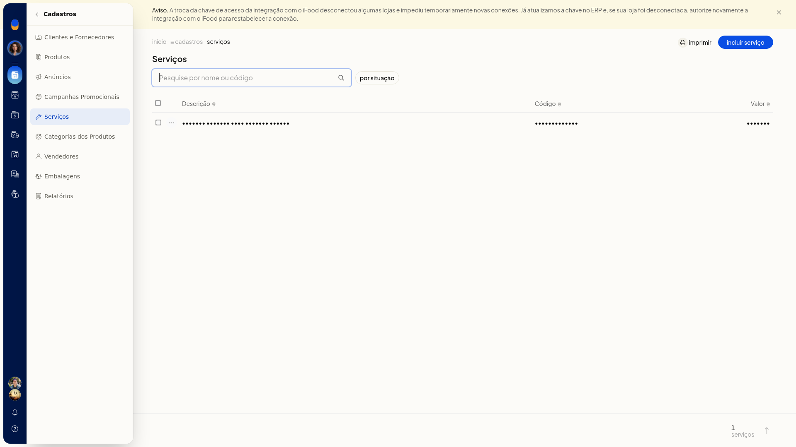
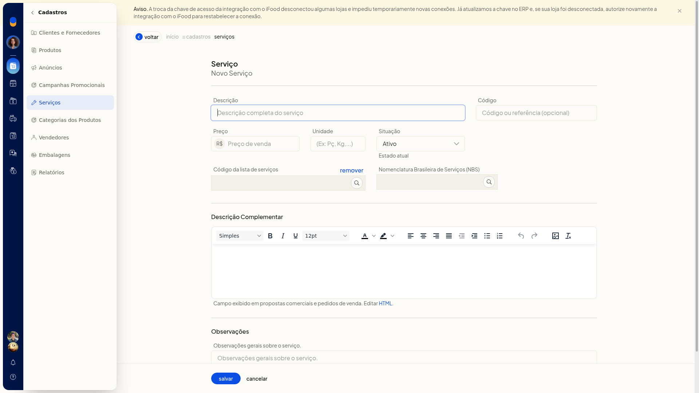
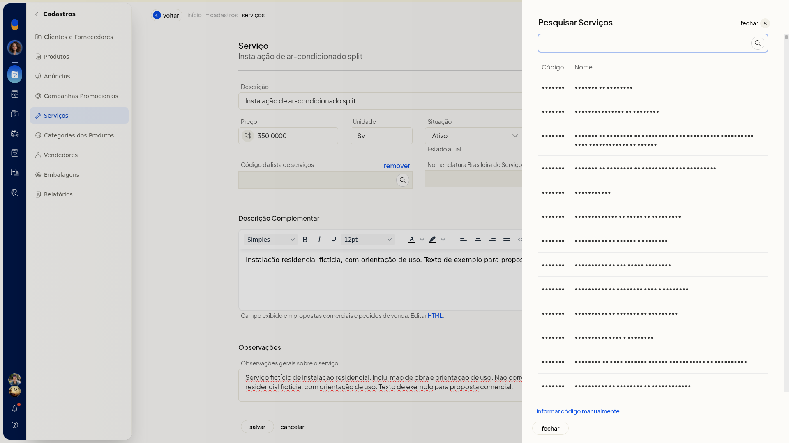
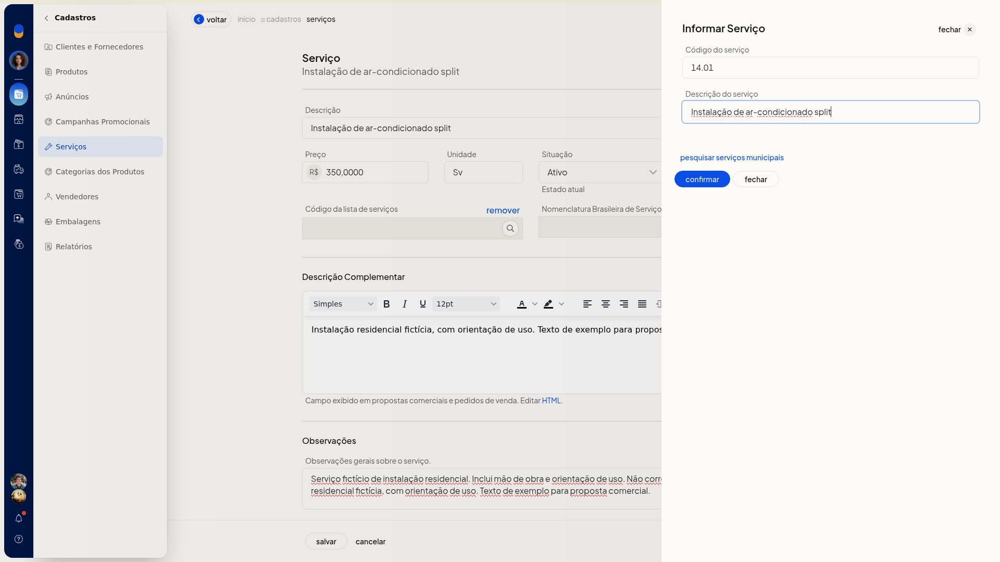
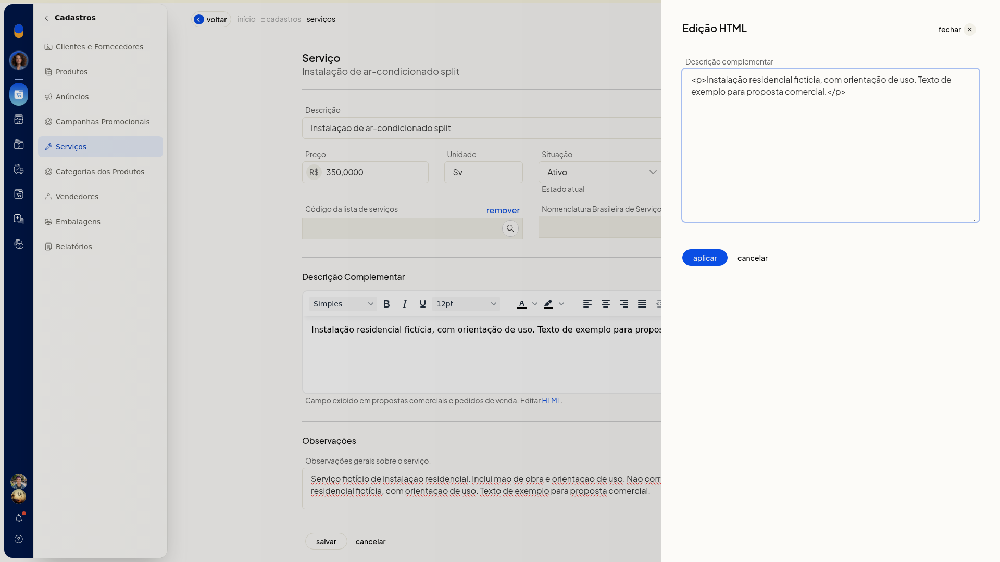
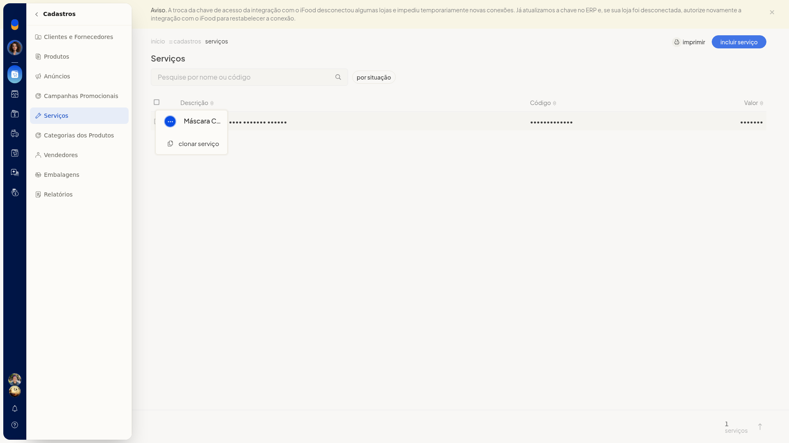
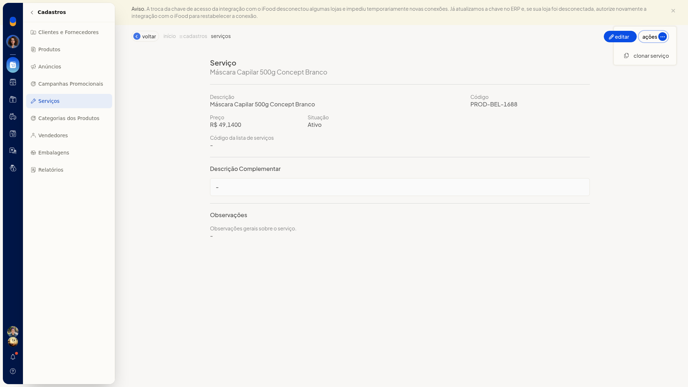
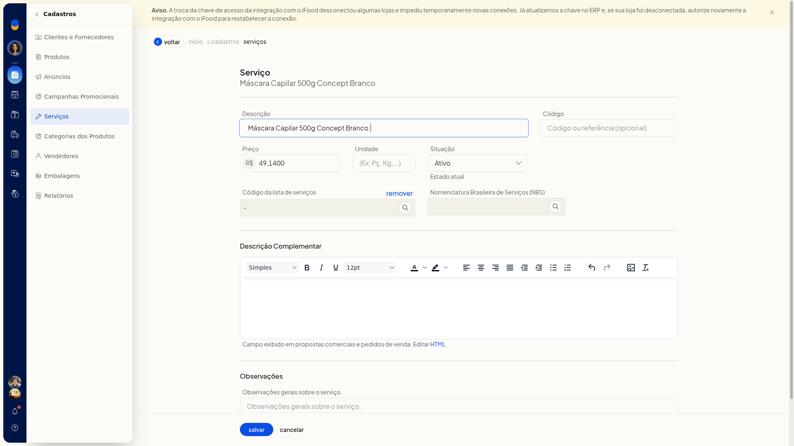
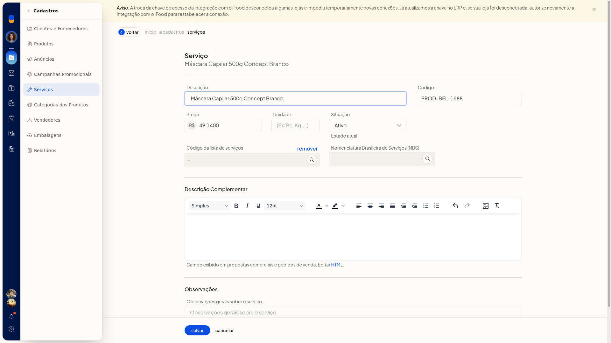
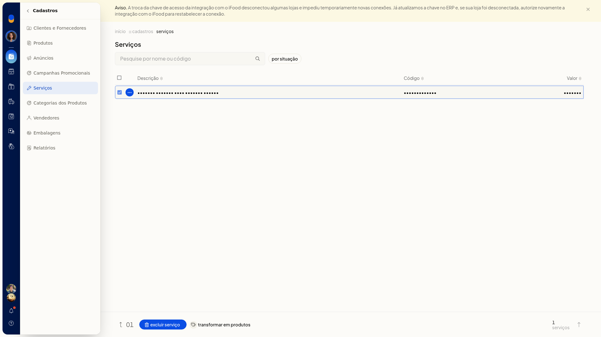

Cadastro de serviços
No ERP da Olist, o cadastro de serviços é a lista e o formulário em que a empresa registra os serviços que comercializa ou executa. Você inclui um serviço, consulta e edita um já existente, clona um serviço para aproveitar os dados, pesquisa e filtra a lista, imprime a relação e, com itens marcados, exclui serviços ou os transforma em produtos.
O acesso fica em Cadastros > Serviços.
Importante
- Excluir serviço e Transformar em produtos só aparecem na barra inferior depois que ao menos um serviço é marcado na listagem.
- Para transformar serviços em produtos, a empresa precisa ter Produtos.
Instruções
Cadastrar pela tela
-
Acesse Cadastros > Serviços.

-
Clique em Incluir serviço.

-
Preencha os dados do serviço. Nenhum campo do formulário é obrigatório.
Dados do serviço
- Descrição
- Código
- Preço: valor em reais (R$)
- Unidade
- Situação: Ativo ou Inativo. Ativo já vem selecionado.

-
Se quiser, informe Código da lista de serviços. Pesquise em Pesquisar Serviços por código ou nome, ou abra Informar Serviço e preencha Código do serviço e Descrição. Não é necessário concluir a seleção. Quando há código informado, o campo exibe Remover.



-
Se quiser, pesquise Nomenclatura Brasileira de Serviços (NBS) por código ou descrição. Não é necessário concluir a seleção.

-
Se quiser, escreva Descrição complementar e Observações. Em Descrição complementar, use a formatação ou clique em Editar HTML e depois em Aplicar ou Cancelar. O campo Observações traz a legenda Observações gerais sobre o serviço.

-
Clique em Salvar para gravar o serviço. Para sair sem gravar, clique em Cancelar.
Clonar um serviço
-
Na listagem, abra o menu da linha (reticências) e clique em Clonar serviço. Outro caminho: abra o serviço, clique em Ações e depois em Clonar serviço.


-
Revise os campos. O formulário abre com os dados do serviço de origem, a Situação permanece Ativo e o Código fica em branco.

-
Clique em Salvar para gravar o clone. Cancelar descarta o formulário e volta à listagem, sem gravar.
Editar um serviço
-
Na listagem, clique na linha do serviço.

-
Clique em Editar.

-
Altere o que for necessário em Descrição, Código, Preço, Unidade, Situação, Código da lista de serviços, Nomenclatura Brasileira de Serviços (NBS), Descrição complementar e Observações.
-
Clique em Salvar para gravar as alterações. Cancelar volta à ficha sem gravar.
Pesquisar e filtrar a listagem
-
Em Cadastros > Serviços, use o campo Pesquise por nome ou código.
-
Clique em por situação e escolha Sem filtro, Ativos, Inativos ou Excluídos. Para retirar o filtro, use limpar filtros.

Imprimir a relação
-
Na listagem, clique em Imprimir.
-
Confira a pré-visualização, com as colunas Código, Descrição, Unidade e Preço de venda.

-
Em Mais ações, está disponível Abrir em outra página. Clique em Fechar para encerrar a pré-visualização sem imprimir.

Excluir serviços
-
Na listagem, marque a caixa de seleção de um ou mais serviços.
-
Na barra inferior, clique em Excluir serviço.

Transformar serviços em produtos
- Na listagem, marque a caixa de seleção de um ou mais serviços.
- Na barra inferior, clique em Transformar em produtos.
Resultado
A listagem de Serviços mostra as colunas Descrição, Código e Valor. Ao clicar na linha, a ficha abre somente leitura, com Voltar, Editar e Ações. Cancelar na edição volta à ficha sem gravar. Cancelar na clonagem volta à listagem sem gravar. Fechar encerra a pré-visualização sem imprimir.
Informações adicionais
- O menu Ações da ficha contém Clonar serviço.
- Na clonagem, o Código fica em branco para você informar outro antes de salvar.
- A barra inferior da seleção mostra a quantidade de serviços marcados, Excluir serviço e Transformar em produtos.